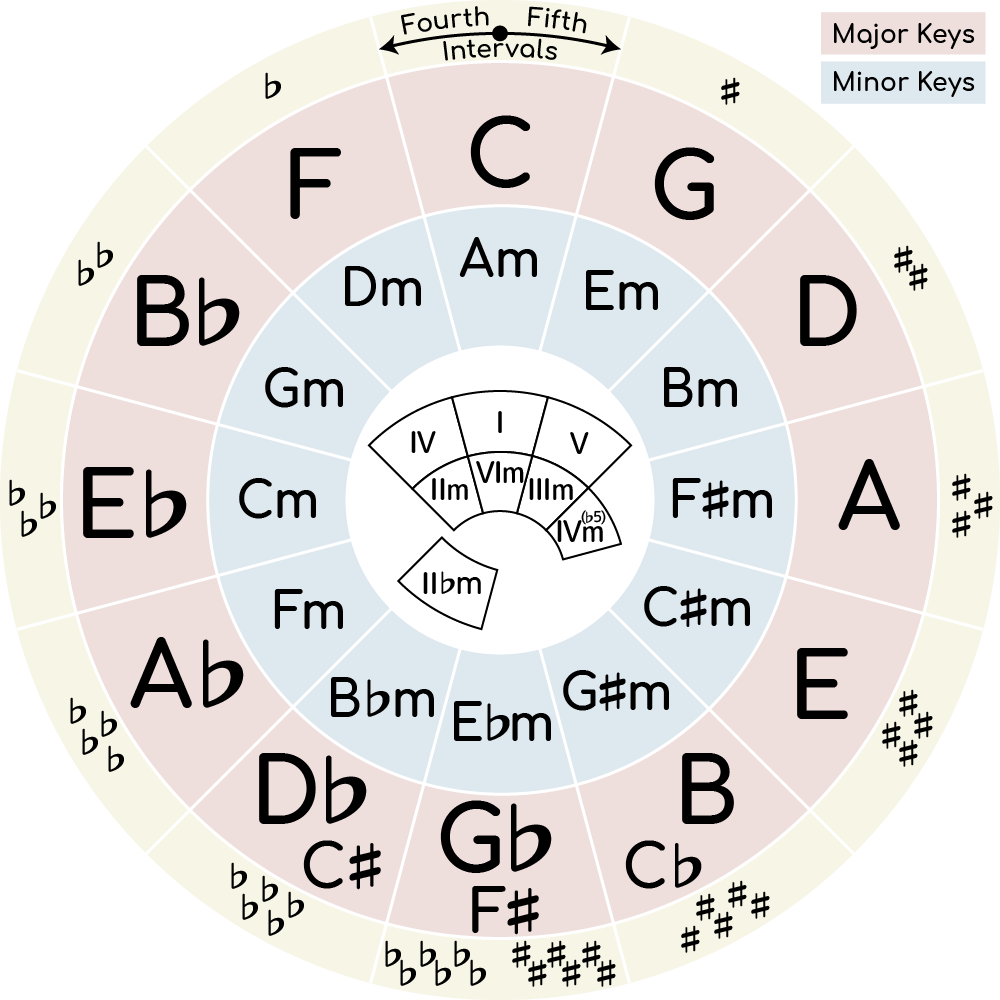
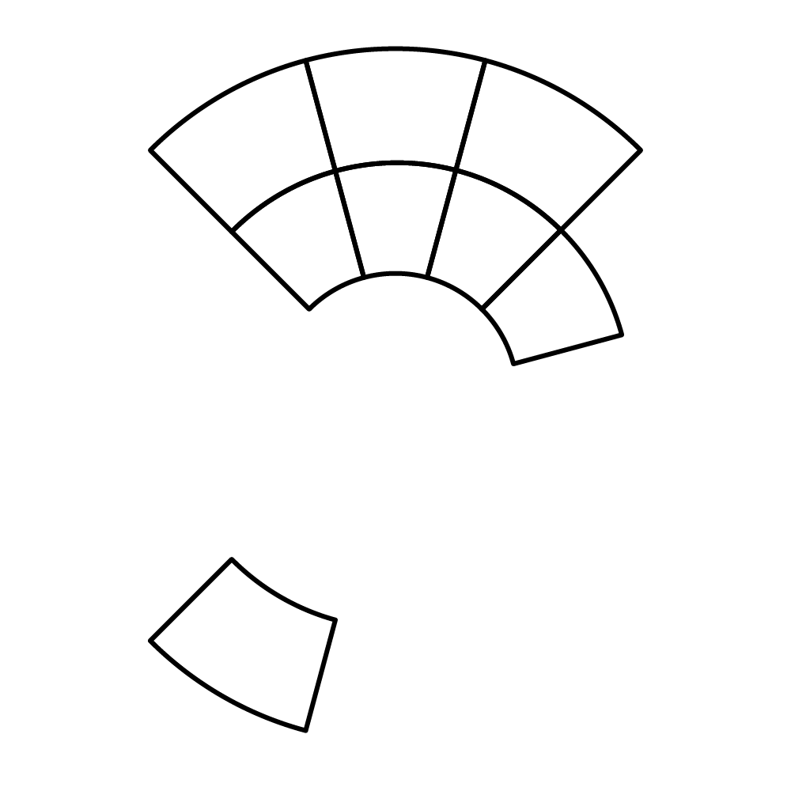

| Major | degree | Ⅰ | Ⅱ | Ⅲ | Ⅳ | Ⅴ | Ⅵ | Ⅶ |
|---|---|---|---|---|---|---|---|---|
| Major scale |
Scale note | Ⅰ | Ⅱ | Ⅲ | Ⅳ | Ⅴ | Ⅵ | Ⅶ |
| Triad | Ⅰ | Ⅱ | Ⅲm | Ⅳ | Ⅴ | Ⅵm | Ⅶdim | |
| Tetrad | ⅠM7 | Ⅱm7 | Ⅲm7 | ⅣM7 | Ⅴ7 | Ⅵm7 | Ⅶm7(♭5) | |
| Secondary dominant |
Ⅵ7 | Ⅶ7 | Ⅰ7 | Ⅱ7 | Ⅲ7 | |||
| Substitute dominant |
Ⅱ♭7 | |||||||
| Tention note |
9 , 13 | 9 , 11 | 11 | 9 , ♯11 , 13 | 9 , 13 | 9 , 11 , | 11 , ♭13 | |
| Ⅱ , Ⅵ | Ⅲ , Ⅴ | Ⅵ | Ⅴ , Ⅶ , Ⅱ | Ⅵ , Ⅲ | Ⅶ , Ⅱ | Ⅲ , Ⅴ | ||
| Avoid note |
Ⅳ | Ⅶ | Ⅳ , Ⅰ | Ⅰ | Ⅳ | Ⅰ |
| minor | degree | Ⅰ | Ⅱ | Ⅲ | Ⅳ | Ⅴ | Ⅵ | Ⅶ |
|---|---|---|---|---|---|---|---|---|
| Natural minor scale |
Scale note |
Ⅰ | Ⅱ | Ⅲ♭ | Ⅳ | Ⅴ | Ⅵ♭ | Ⅶ♭ |
| Tetrad | Ⅰm7 | Ⅱm7(♭5) | Ⅲ♭M7 | Ⅳm7 | Ⅴm7 | Ⅵ♭M7 | Ⅶ♭7 | |
| Harmonic minor scale |
Scale note |
Ⅰ | Ⅱ | Ⅲ♭ | Ⅳ | Ⅴ | Ⅵ♭ | Ⅶ |
| Tetrad | ⅠmM7 | Ⅱm7(♭5) | Ⅲ♭augM7 | Ⅳm7 | Ⅴ7 | Ⅵ♭M7 | Ⅶdim7 | Melodic minor scale |
Scale note |
Ⅰ | Ⅱ | Ⅲ♭ | Ⅳ | Ⅴ | Ⅵ | Ⅶ |
| Tetrad | ⅠmM7 | Ⅱm7 | Ⅲ♭augM7 | Ⅳ7 | Ⅴ7 | ⅥM7 | Ⅶm7(♭5) |
| Church mode |
degree | Ⅰ | Ⅱ | Ⅲ | Ⅳ | Ⅴ | Ⅵ | Ⅶ | Ionian (Major) |
ⅠM7 | Ⅱm7 | Ⅲm7 | ⅣM7 | Ⅴ7 | Ⅵm7 | Ⅶm7(♭5) |
|---|---|---|---|---|---|---|---|---|
| Dorian | Ⅰm7 | Ⅱm7 | Ⅲ♭M7 | Ⅳ7 | Ⅴm7 | Ⅵm7(♭5) | Ⅶ♭M7* | |
| Phrygian | Ⅰm7 | Ⅱ♭M7* | Ⅲ♭7 | Ⅳm7 | Ⅴm7(♭5) | Ⅵ♭M7 | Ⅶ♭m7 | |
| Lydian | ⅠM7 | Ⅱ7 | Ⅲm7 | Ⅳ♯m7(♭5)* | ⅤM7 | Ⅵm7 | Ⅶm7 | |
| Mixolydian | Ⅰ7 | Ⅱm7 | Ⅲm7(♭5) | ⅣM7 | Ⅴm7 | Ⅵm7 | Ⅶ♭M7* | |
| Aeolian (N minor) |
Ⅰm7 | Ⅱm7(♭5) | Ⅲ♭M7 | Ⅳm7 | Ⅴm7 | Ⅵ♭M7 | Ⅶ♭7 | |
| Locrian | Ⅰm7(♭5) | Ⅱ♭M7 | Ⅲ♭m7 | Ⅳm7 | Ⅴ♭M7 | Ⅵ♭7 | Ⅶ♭m7 | |

